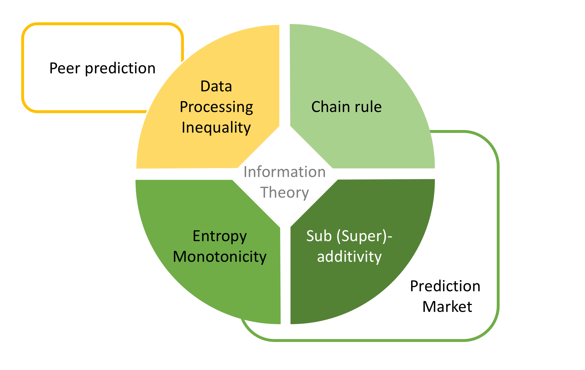

Peer prediction (PP) and prediction markets (PM) are two popular and important information aggregation tools. This tutorial will employ information theory to provide an information theoretical understanding for both PP and PM, including recasting several important prior results into this information theory framework. This new approach promises to provide a systematic theoretical understanding for both PP and PM, and we believe the entire EC community could benefit from better understanding these information theory tools.

Click here for the pdf file of the proposal.